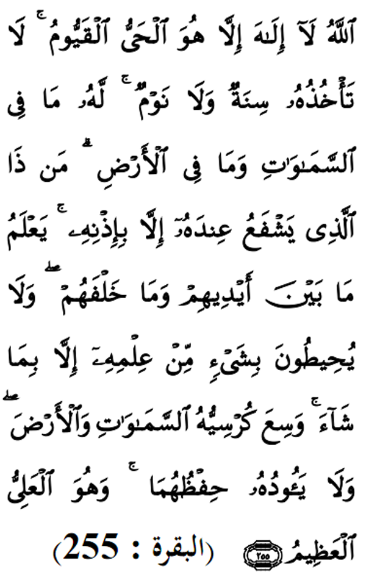

|
Terjemahan "Dialah Allah, tiada Tuhan yang sebenarnya disembah melainkan Dia yang sentiasa hidup lagi sentiasa mengurus hamba-Nya sendirian, tidak dipengaruhi oleh mengantuk dan tidur. Dialah yang mempunyai segala di langit dan segala di bumi, siapakah gerangan yang memberikan syafaat di sisi-Nya dengan hak tidak dengan keizinan-Nya? Tuhan mengetahui apa yang di hadapan mereka dan mereka tidak meliputi (mengetahui) sesuatu dari ilmunya melainkan barang yang dikehendaki-Nya. Maha Luas Kursi (kerajaan)-Nya meliputi sekalian langit dan bumi. Dan tiada berat bagi-Nya memelihara keduanya dan dialah Yang Maha Tinggi lagi Maha Agung. Fadhilat Wirid Dalam hadith yang lain yang diriwayatkan oleh Ibn Mas'ud (RA), Rasulullah (SAW) bersabda: "... sesiapa yang membaca sepuluh ayat ini: Empat di awal surah Al - Baqarah, ayat Kursi, dan dua ayat berikutnya dan akhir surah Al - Baqarah, maka rumahnya akan selamat daripada dimasuki syaitan hingga ke pagi hari." |
 |